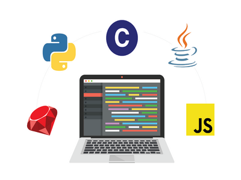
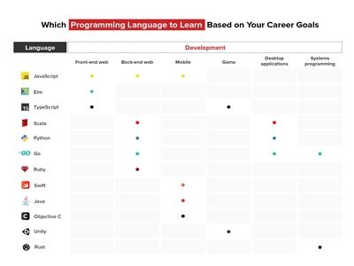

Which Computer Language is the best?
 Whether you’re looking to begin coding as a hobby, a new career, or just to enhance your current role, the first thing you’ll have to do is decide which programming language you want to start with. And if you are new to software development, it can be tought to know which language to start with when there are so many options. You don’t want to waste your time. If you’re going to put aside the time and energy needed to learn new programming languages, you might as well learn language that is in high demand. There are no right or wrong answer because it all depend on what kind of project you want to work for, who you want to work. You will start to find out which language is most suitable for your interest and career goal.
-
Javascript
According to Stack Overflow’s 2020 Developer Survey, JavaScript currently stands as the most commonly-used language in the world (69.7%). It is used as a client-side programming language by 97.8 percent of all websites. JavaScript is easy to learn and implement. You can create dynamic web elements such as animated graphics, interactive maps and clickable buttons. Javascript language is use for web development,game development, mobile apps and building web server.
-
Python
Python is use for back end development, data science, and app development.Python is one of the most popular programming languages today and is easy for beginners to learn because of its readability. Python reads like English and is simple to understand for someone who’s new to programming. This allows you to obtain a basic knowledge of coding practices without having to obsess over smaller details that are often important in other languages.
-
HTML/CSS
HTML is a markup language, which means that it is responsible for formatting the appearance of information on a website. Essentially, HTML is used to describe web pages with ordinary text. CSS, or cascading style sheets, is usually applied in conjunction with HTML and governs the site’s appearance. While HTML organizes site text into chunks, CSS is responsible for determining the size, color and position of all page elements. Both HTML and CSS is useful for Web document, Website development and web design.
-
Java
Java is an object-oriented and feature-heavy programming language that’s in high demand. In object-oriented programming, developers create objects that encompass functions and data, which can then be used to provide structure for programs and applications. this language is relatively easy to learn and use, boasts incredible security and can handle massive amounts of data.Java is use for E-commerce, Finance, App development.